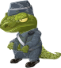

<div style="opacity: 0;">
    <!-- Sniglet font so that it works correctly with the actions-->
    <div style="font-family: Sniglet;">Sniglet</div>
</div>

<div style="display: none;">

    <!--

    [[ PRELOAD DIV ]]

    Place elements here to preload assets.

    They will not be visible, but any fonts, images, etc. will be pre-loaded.

    It is a good idea to preload any assets that are not displayed on page load, but are triggered dynamically,
    such as the toggle iMG button, where the image is changed dynamically and the browser must download the second image,
    which takes time, during which nothing is displayed.

    -->

    <!-- iMG Button States -->
    
    

    <!-- Zoom Button States -->
    
    

    <!-- World Map Image -->
    
    

    <!-- Emoticons -->
    
    
    
    
    
    
    
    
    
    
    
    
    
    
    
    
    
    
    
    
    
    
    
    
    
    
    

    <!-- Item Window Background -->
    

</div>